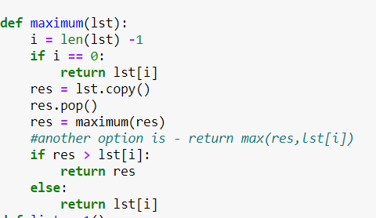
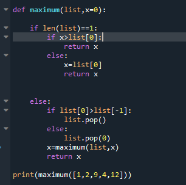

{kind=link}
ככה?


def maximum(lst):
i = len(lst) -1
if i == 0:
return lst[i]
res = lst.copy()
res.pop()
res = maximum(res)
#another option is - return max(res,lst[i])
if res > lst[i]:
return res
else:
return lst[i]

עם הזחות
אהלן ים, כתוב להשתמש אך ורק בחומר שלמדנו כבר. רקורסיה לא נופלת תחת חומר שלא למדנו?
לא.
למה בלי copy? מה הבעיה?
הפתרון שלי. אשמח להערות מכל בחינה (יעילות, רווחים, צורת כתיבה וכו׳)
הערה: השתמשתי במילים “l” ו-“m” במקום “num_list” ו-״maximum” בהתאמה מכיוון שהקוד נכתב באפליקציה באייפון וניסיתי שכל שורת קוד לא תצטרך לחרוג לשורה הבאה.
היי @orpazf ,
אפשר הסבר מה קורה בחלק האחרון של הפונקציה, ניסיתי להריץ אותה
בvisualize python ובמחברת.
אני מקבל שגיאה שיש חריגה בגודל הרקורסיה
על איזה גודל ניסית להריץ אותה? לרוב מחסנית הקריאות לפונקציה מוגבלת וניתן להגיע לכל היותר ל-999 קריאות רקורסיביות לפני שנזרקת שגיאה
בהתחלה,
[0, 1, 15, 3, 18, 5, 6, 14, 8, 1012, 9, 7, 4, 2, 20]
אחרי השגיאה
[0, 1, 15]
ניסיתי להריץ עכשיו שוב על שני המקרים שכתבת וזה הריץ והחזיר את התשובות הנכונות. האם ייתכן שטעית בהעתקה של אחת מהשורות?
כמובן שייתכן, בדרך כלל זו תמיד הסיבה חחחח.
בדקתי שוב בקפידה, כתבתי len בלי ארגומנט  הפונקציה רצה בצורה אינסופית על ערך לא מוגדר
הפונקציה רצה בצורה אינסופית על ערך לא מוגדר

תודה שהעלית את הפתרון שלך שי. לא בדקתי נכונות של הקוד, אבל רציתי לשאול את @Yam - מבחינת עקרונות תכנות נכון, זה לא ״נכון״ בבעיה שלנו שהפונקציה הראשית תקבל עוד פרמטרים מלבד רשימה, נכון? (אפשר לעטוף אותה בפונקציה ראשית שתקבל כפרמטר רק רשימה וקוראת לפונקציה עם יותר פרמטרים, נכון?) השאלה שלי היא מדוע. כיצד לנמק מדוע זה פסול. (אולי זה קשור לעיקרון ההכמסה, אולי יש עוד סיבות?)
השאלה נשאלת ללא כל קשר לכך שביקשת שהפונקציה תקבל אך ורק רשימה כפרמטר, נניח והיית מתיר זאת.
אפרופו, האם נדבר בקורס על ״עקרונות תכנות נכון״ וכל הדברים הקשורים לזה? למשל אני מניח שההמלצה שפונקציה לא תשנה את הקלט שלה (כמו שינוי רשימה שמתקבלת כפרמטר) זה חלק מזה.
אין עם זה בעיה עקרונית, אבל זה נראה פחות טוב ומקשה לעקוב אחרי הרקורסיה. זה כן מקל על הכתיבה שלה, ולכן הצעתי לאנשים לפתור בלי.
לתלמידים שהפתרונות שלהם טובים מאוד במערכת התרגילים אנחנו הרבה פעמים נותנים insights מעבר, לא יודע אם נספיק להגיע לעקרונות מתקדמים במסגרת הקורס
באמת?! חייב להודות שאני ממש מופתע. בלי קשר למעקב אחרי הקוד, הרי פונקציה זו ״קופסה סגורה״. תאר לך שזו הייתה פונקציה שימושית בפייתון, אזי בכל פעם שהיית רוצה להשתמש בה היית צריך להזין בנוסף לרשימה גם את הקבוע 0. אבל אני מבין מדבריך ״שבעולם האמיתי״ בהייטק זה לא נורא, העיקר שיעבוד.
אגב עכשיו כשאני מסתכל על הסינטקס אני רואה שהאיתחול של הפרמטר x נעשה כבר בחתימת הפונקציה, לא היה לי מושג שזה אפשרי.
הפסקה השנייה שכתבת פותרת לך את הספקות נלמד על זה בהמשך
אה אוקי, אז אני מניח שבגלל זה הדבר מקובל. אחכה בסבלנות כשנלמד זאת (כאמור, יהיה מגניב אם ניגע בהזדמנות בתכנות נכון  )
)
תודה רבה!
עריכה: טוב אני רואה שכאשר קוראים לפונקציה אז מפעילים אותה אך ורק על רשימה אז אין בעיה. אז ספציפית עם הפתרון הזה אין בעיה, אבל עדיין תוהה במקרים אחרים. אבל את זה נשאיר לפעם אחרת 
def maximum(lis):
if len(lis) == 1:
return lis[0]
if lis[0] > lis[1]:
return maximum(lis[0:1] + lis[2:])
return maximum(lis[1:])
li = [1,4,3,27,18,7,8,9,0]
print(maximum(li))
print(li){kind=link}